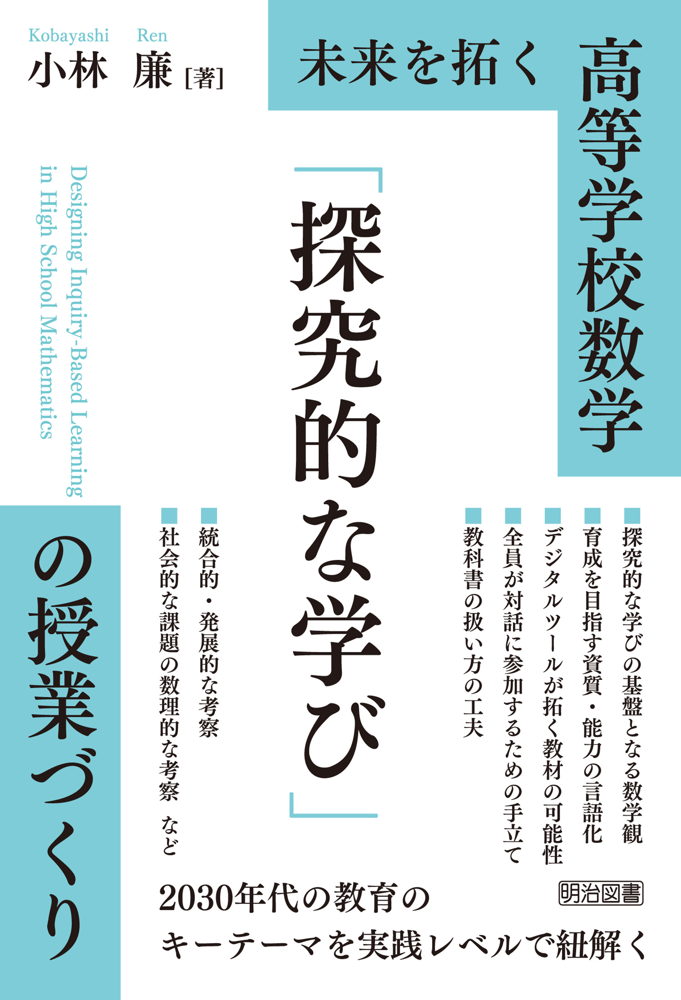

LEARNING MATH THROUGH INQUIRY
数学を、
探究的に、
深く学ぶ。
生徒の「なぜ？」から、授業をつくる。
高校数学の教材と実践、そして研究の成果を
日々の授業づくりへ。
はじめての方へ
「探究的な学び」って、どんな学び？
数学の探究的な学びを、3つのポイントから。
入門から、書籍やnoteでの詳しい学びへ。
EXPLORE BY SUBJECT
今日の授業から、探す。
科目別の教材・実践事例・参考資料
BOOKS & TEACHING MATERIALS
授業づくりを支える、書籍と教材。
書籍 · 東洋館出版社
高等学校 数学科 探究ベースの数学授業づくり
生徒に残る学びの実現を目指して。探究ベースの授業づくりを考えるために。
出版社の紹介を見る ↗高等学校数学指導資料 · 文部科学省
数学的リテラシーを育む授業事例集
授業づくりの参考になる事例を、文部科学省の公開資料から。
公開資料の案内を見る ↗教材 · 学びの場.com
生かす数学
教材の紹介と配布案内を、学びの場.comでご覧いただけます。
教材の紹介を見る ↗教材 · 東京学芸大学附属国際中等教育学校
TGUISS数学
学校のWebページで公開されている、数学教材の紹介・入手案内へ。
教材の案内を見る ↗IDEAS FOR YOUR CLASSROOM
探究の入口になる教材。
関数グラフでアートしよう！
思考・判断・表現と主体的に学習に取り組む態度の評価事例として（提出のテンプレート例）。文科省サイト"StuDX Style"に「各教科等における深い学びの実践」の事例としても掲載されています。グラフツールをも用いながら深い学びを生んでいくことが想定されています。
ワークシート教材の詳細 →
「薬の定期的な服用を考察しよう」
学習指導要領「数列」イ(ｲ)「事象の再帰的な関係に着目し，日常の事象や社会の事象などを数学的に捉え，数列の考えを問題解決に活用すること」を身に付けることを意図した教材です。私が過去に行った実践を論文にした漸化式と「薬の服用」問題の実践事例📄が少し参考になるかもしれません。
ワークシート / 論文教材の詳細 →
影の動きはどうなる？
ベクトル方程式の教材として。生徒の予想が割れるがために生徒が問題意識を持ちやすい教材です。なおベクトル以外のアプローチも考えられます。スマホライトがあれば実験も簡単にできます。
ワークシート教材の詳細 →
科研費 基盤研究（C）23K02496
「数学的な見方・考え方」の育成を軸とする
高等学校数学科の授業デザインと教育課程
ESSAYS & NOTES
授業の背景にある考え方を読む。
研究や授業についての考察は、noteでも紹介しています。